Аккаунтaccount
Учётная запись на GitHub: логин, пароль, почты, репозитории и настройки одного человека.
Примераккаунт MaximBytecamp с номером 245827976.
Гдеглавы 1.2, 4.1
Справочник по Git и GitHub · модуль 4 · GitHub: аккаунт и связь с ним
Глава 4.1
В главе разобрано, как устроен аккаунт на GitHub и что в нём настроить до первой отправки коммитов. Первая часть — логин и регистрация. Вторая — почта: по ней GitHub находит автора коммита и решает, попадёт ли коммит в активность профиля. Третья — страница профиля и её README. Четвёртая — двухфакторная защита: как приложение на телефоне и GitHub получают один и тот же код, не связываясь друг с другом.
В модулях 2 и 3 вся работа шла на своём компьютере. Коммиты лежат в папке .git, и на GitHub уходит только то, что вы отправите. В главе 1.3 VS Code уже вошёл в аккаунт GitHub. Дальше этот аккаунт станет местом, где лежат ваши репозитории, где вас находят преподаватель и команда и откуда приходят приглашения в чужие проекты. Перед первой отправкой аккаунт настраивают: проверяют почту, заполняют профиль и закрывают вход вторым фактором.
Аккаунт похож на квартиру с адресом. Адрес выбирают один раз, и по нему приходят письма и гости. Табличка на двери сообщает, кто здесь живёт. Замок на двери не пускает чужих, даже если у них есть адрес.
Ассоциация: адрес, табличка и замок
По адресу квартиру находят почтальон и гости. Табличка на двери говорит, кто живёт внутри. Замок с двумя ключами открывается, только если есть оба.
Логин входит в адрес каждой вашей страницы. Профиль — страница по этому адресу: имя, описание, репозитории. Двухфакторная защита требует при входе пароль и код с телефона.
Где не совпадаетЛогин можно сменить. Ссылки на репозитории после этого GitHub перенаправляет на новый адрес, а старая ссылка на профиль перестаёт открываться. Поэтому логин выбирают так, чтобы не менять его.
Зачем это нужно в работе
xXx-coder2008 ничего не говорит о человеке.Глава идёт по шагам на настоящем аккаунте MaximBytecamp — аккаунте автора справочника. Если аккаунт у вас уже есть, начните с шага 3: шаги 1 и 2 нужны для нового аккаунта. Проект sait-vizitka в этой главе не меняется, архив на начало главы не нужен.
Логин (username) — короткое имя аккаунта латиницей, уникальное на всём GitHub. Логин автора справочника — MaximBytecamp. Логин нельзя заменить пробелами и русскими буквами: он входит в адреса страниц, а адрес пишется латиницей.
Посмотрим, где логин встречается после регистрации. Ниже — пять адресов, которые получил аккаунт MaximBytecamp. Все пять относятся к этому аккаунту. Служебная почта нужна для подписи коммитов; письма на неё не доставляются.
Логин стоит в адресе профиля и в адресе каждого репозитория. Он же образует адрес сайта на GitHub Pages — maximbytecamp.github.io. Служебная почта начинается с номера аккаунта 245827976, после него идёт логин. Упоминание @MaximBytecamp в обсуждении присылает владельцу логина уведомление. Регистр букв в адресе не важен: github.com/maximbytecamp открывает тот же профиль. Отсюда правило выбора: логин будет напечатан в резюме, в ссылках на ваши работы и в адресе вашего сайта.
Форма регистрации проверяет логин по мере ввода. Допустимы латинские буквы, цифры и одиночные дефисы. Дефис не может стоять первым или последним знаком. Занятый логин форма не примет:
| Логин | Примет ли форма | Почему |
|---|---|---|
petrov-ivan-dev | да, если свободен | буквы и одиночные дефисы |
ivan-petrov | нет | занят: github.com/ivan-petrov уже открывается |
ivan--petrov | нет | два дефиса подряд |
-ivanpetrov | нет | дефис в начале |
ivan_petrov | нет | подчёркивание не допускается |
иван-петров | нет | русские буквы не допускаются |
Логин из имени и фамилии латиницей читается в резюме без пояснений. Если такой занят, добавляют второе слово: petrov-ivan-dev, ivanpetrov-web. По логину из имени и фамилии профиль проще сопоставить с резюме.
Что получилось.Логин выбран и проверен по правилам. Следующий шаг — регистрация с этим логином.
Регистрация идёт на странице github.com/signup. На одной странице заполняются четыре поля:
Кнопка Create account открывает проверку, что регистрируется человек: головоломку из картинок. После неё GitHub отправляет на почту код из цифр и показывает поле для него. Код вводится на той же странице, и аккаунт создан.
Во время съёмки этой главы автоматический браузер GitHub на страницу регистрации не пустил: вместо формы появилось сообщение Access is temporarily restricted. Причину ограничения по этому сообщению определить нельзя. Если форма не загружается, проверьте, включён ли JavaScript, временно отключите блокировщик для GitHub и повторите попытку позднее.
Что получилось.Аккаунт создан, почта подтверждена кодом. У аккаунта есть логин и номер. Следующие разделы — о том, зачем GitHub нужна ваша почта, кроме входа.
В главе 1.3 в Git записаны имя и почта: user.name и user.email. Git вписывает их в каждый коммит как подпись автора. Вход VS Code в GitHub в подпись не попадает, это показано в главе 1.4. Когда коммит оказывается на GitHub, у сервиса есть только подпись внутри коммита. По ней и ищется аккаунт.
Так работает сортировка писем в общежитии. На конверте написано имя и номер комнаты. Вахтёр сверяет номер со списком жильцов и кладёт письмо в нужную ячейку. Письмо с опечаткой в номере остаётся на общем столе, хотя имя на конверте верное.
Связь коммита с аккаунтом — отметка GitHub, что коммит сделан владельцем аккаунта. GitHub ставит её, если почта автора коммита есть в списке почт какого-то аккаунта. Имя автора при этом не сравнивается. У связанного коммита на GitHub стоит аватар аккаунта и ссылка на профиль, у несвязанного — серый значок и имя без ссылки.
Схема показывает это сравнение на двух настоящих коммитах репозитория этого справочника. У обоих коммитов одно и то же имя автора, почты отличаются одной буквой.
Слева — две подписи. Они отличаются одной буквой перед @: mm и sm. Вторая почта — опечатка: коммит 7c91a90 сделан в сентябре с этой почтой по ошибке. В середине — список почт аккаунта: основная почта и служебный адрес. Зелёная линия ведёт от совпавшей почты к аватару со ссылкой, пунктир — от ненайденной почты к серому значку. Из схемы следует: связь определяет почта, имя в user.name на неё не влияет.
Так выглядят страницы этих коммитов на GitHub. Страница коммита открывается по адресу репозитория, к которому добавлено /commit/ и имя коммита.
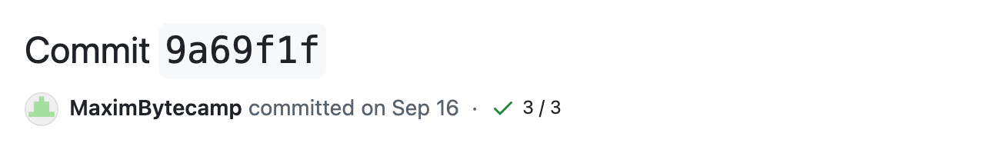
9a69f1f: слева от имени — аватар аккаунта, имя ведёт на профиль.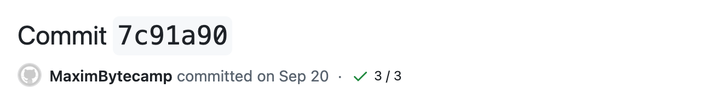
7c91a90: серый значок вместо аватара, имя не ведёт на профиль.Почту автора коммита в публичном репозитории видно без входа в аккаунт. Если к адресу страницы коммита добавить .patch, GitHub отдаст коммит текстом, и во второй строке будет подпись. Этот способ советует документация GitHub для проверки почты коммита.
Прогон на живых данных. Запросим обе подписи командой curl и спросим у GitHub, с каким аккаунтом связан каждый коммит. Вторая команда обращается к API GitHub через программу gh. Поле author в ответе — найденный аккаунт.
curl -sL https://github.com/MaximBytecamp/git_github_makarov/commit/9a69f1f.patch | sed -n 2p From: MaximBytecamp <bytecampmm@gmail.com> curl -sL https://github.com/MaximBytecamp/git_github_makarov/commit/7c91a90.patch | sed -n 2p From: MaximBytecamp <bytecampsm@gmail.com> gh api repos/MaximBytecamp/git_github_makarov/commits/9a69f1f --jq '.author.login' MaximBytecamp gh api repos/MaximBytecamp/git_github_makarov/commits/7c91a90 --jq '.author' null
| Коммит | Почта в подписи | Найденный аккаунт | На странице коммита |
|---|---|---|---|
9a69f1f | bytecampmm@gmail.com | MaximBytecamp | аватар, ссылка на профиль |
7c91a90 | bytecampsm@gmail.com | null — не найден | серый значок, без ссылки |
Ответ null означает «аккаунт не найден». Коммит при этом лежит в репозитории, его изменения и сообщение на месте. Потеряна только связь с человеком. Прогон показал ещё одно: почту в подписи видит любой посетитель. Скрыть её можно служебным адресом — это шаг 3. Сначала разберём, что ещё зависит от связи коммита с аккаунтом.
На странице профиля есть таблица из квадратов — по квадрату на каждый день за последний год. Чем больше в этот день вклада, тем темнее квадрат.
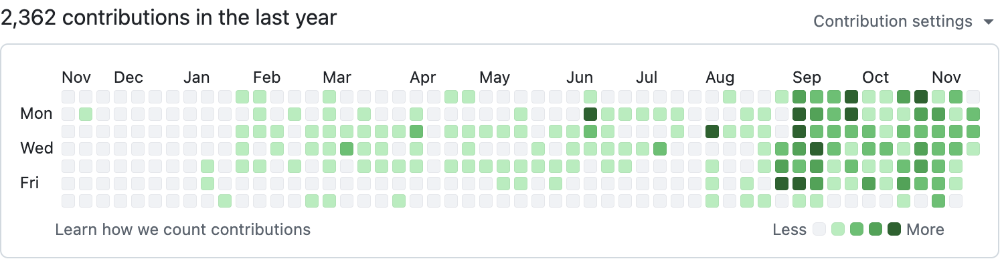
Граф активности (contribution graph) — эта таблица дней на странице профиля. Вкладом в ней считаются коммиты, открытые задачи и запросы на слияние, обзоры кода. Коммит засчитывается, если выполнены два условия из документации GitHub: почта автора связана с аккаунтом и коммит лежит в ветке по умолчанию — обычно main. Коммит в другой ветке засчитывается после слияния в main. Новый коммит появляется в графе в течение суток.
Проверим первое условие на тех же двух днях. В репозитории справочника 20 сентября был один коммит — 7c91a90 с опечаткой. На следующий день, 21 сентября, — два коммита с верной почтой. API GitHub отдаёт, сколько коммитов из каких репозиториев засчитано в граф за день.
Прогон на живых данных. Сначала история репозитория за два дня, затем засчитанные коммиты по репозиториям за 20 и 21 сентября:
git log --since=2026-09-20 --until=2026-09-22 --format='%h %ae %ad' --date=short 12f15c3 bytecampmm@gmail.com 2026-09-21 507b92c bytecampmm@gmail.com 2026-09-21 7c91a90 bytecampsm@gmail.com 2026-09-20 gh api graphql -f query='{ user(login:"MaximBytecamp") { contributionsCollection(from:"2026-09-20T00:00:00Z", to:"2026-09-20T23:59:59Z") { commitContributionsByRepository { repository { name } contributions { totalCount } } } } }' --jq '.data.user.contributionsCollection.commitContributionsByRepository[] | "\(.repository.name) \(.contributions.totalCount)"' python_theory_makarov 8 mongodb_theory_makarov 4 algorthimization_course_vvodnoe 3 mongodb-practice 2 то же для 21 сентября mongodb_theory_makarov 9 algorthimization_course_vvodnoe 9 python_theory_makarov 3 git_github_makarov 2 data-platform-template 1 backend-starter-template 1
| День | Коммиты справочника в main | Почта связана | Засчитано в граф |
|---|---|---|---|
| 20 сентября | 1 — 7c91a90 | нет | 0: репозитория git_github_makarov в списке нет |
| 21 сентября | 2 — 507b92c, 12f15c3 | да | 2 |
20 сентября коммит в справочнике был, но в списке засчитанных репозиториев справочника нет. 21 сентября оба коммита засчитаны. Значит, коммит с чужой почтой пропадает и из графа активности. Если добавить почту bytecampsm@gmail.com в аккаунт и подтвердить её, GitHub свяжет с аккаунтом и этот коммит, и граф пересчитается.
Второе условие — ветка по умолчанию — проверим на придуманных данных. Студент Иван Петров сделал за неделю шесть коммитов. В его аккаунте две почты: личная и служебная. Коммиты записаны в программе списком: имя коммита, день, почта автора, ветка. Программа проверяет два условия по очереди и считает, что останется в графе.
# Какие коммиты GitHub засчитает в граф активности Ивана Петрова
pochty_akkaunta = {"ivan.petrov@example.com", "12345678+ivan-petrov@users.noreply.github.com"}
kommity = [ # (имя, день, почта автора, ветка)
("a1", "пн", "ivan.petrov@example.com", "main"),
("a2", "пн", "ivan.petrov@example.com", "main"),
("b1", "вт", "ivan@MacBook-Ivana.local", "main"),
("c1", "ср", "12345678+ivan-petrov@users.noreply.github.com", "main"),
("d1", "чт", "ivan.petrov@example.com", "dizayn"),
("e1", "пт", "ivan.petorv@example.com", "main"),
]
print("Шаг 1. Почта автора есть в аккаунте?")
for k in kommity:
print(" ", k[0], k[2], "да" if k[2] in pochty_akkaunta else "нет")
shag1 = [k for k in kommity if k[2] in pochty_akkaunta]
print("Шаг 2. Коммит в ветке по умолчанию main?")
for k in shag1:
print(" ", k[0], k[3], "да" if k[3] == "main" else "нет")
shag2 = [k for k in shag1 if k[3] == "main"]
dni = {}
for k in shag2:
dni[k[1]] = dni.get(k[1], 0) + 1
print("Граф:", {d: dni.get(d, 0) for d in ["пн", "вт", "ср", "чт", "пт"]})
Коммит b1 подписан почтой, которую Git составил сам из имени пользователя и имени компьютера, — так бывает, если не выполнить настройку из главы 1.3. У e1 опечатка в фамилии, как у настоящего 7c91a90. Коммит d1 лежит в ветке dizayn, которую ещё не слили в main.
Шаг 1. Программа сверяет почту каждого коммита со списком почт аккаунта:
Шаг 1. Почта автора есть в аккаунте? a1 ivan.petrov@example.com да a2 ivan.petrov@example.com да b1 ivan@MacBook-Ivana.local нет c1 12345678+ivan-petrov@users.noreply.github.com да d1 ivan.petrov@example.com да e1 ivan.petorv@example.com нет
Отпали b1 и e1: их почт в аккаунте нет. Служебный адрес у c1 подошёл, потому что он входит в список почт аккаунта. Осталось четыре коммита.
Шаг 2. Из оставшихся программа берёт коммиты ветки main:
Шаг 2. Коммит в ветке по умолчанию main?
a1 main да
a2 main да
c1 main да
d1 dizayn нет
Граф: {'пн': 2, 'вт': 0, 'ср': 1, 'чт': 0, 'пт': 0}
Отпал d1. В графе остались три коммита из шести. Схема показывает, как эта неделя выглядит в графе:
Иван работал пять дней из пяти, а граф показывает два. Во вторник и пятницу причина — почта, в четверг — ветка. Четверг вернётся в граф сам после слияния dizayn в main. Вторник и пятница вернутся, только если добавить эти почты в аккаунт. Почту ivan@MacBook-Ivana.local добавить нельзя: подтверждение на неё не придёт, такого почтового ящика нет. Поэтому почту в Git проверяют до первых коммитов — это следующий шаг.
Почты аккаунта перечислены в настройках: аватар в правом верхнем углу → Settings → раздел Emails в левом меню. Прямой адрес — github.com/settings/emails.
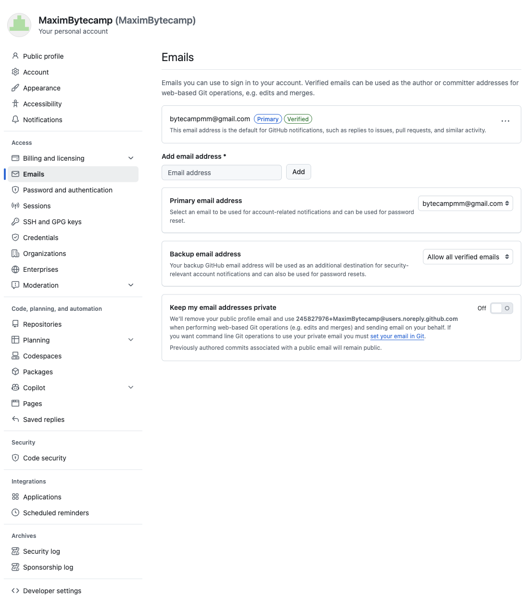
В списке почт пометка Primary стоит у основной: на неё приходят письма GitHub. Ниже расположен переключатель Keep my email addresses private. Если включить его, GitHub уберёт почту из публичного профиля и будет подставлять служебный адрес в коммиты, сделанные на сайте. Сам адрес указан в пояснении к переключателю. В настройках скрытой почты также можно встретить пункт Block command line pushes that expose my email: он отклоняет отправку, если подпись последнего коммита раскрывает скрытую почту. На показанном кадре скрытие выключено, и этого пункта нет.
Служебный адрес (noreply) — почта вида номер+логин@users.noreply.github.com, которую GitHub выдаёт каждому аккаунту. Письма на неё не доставляются, но коммиты с ней связываются с аккаунтом. У аккаунта MaximBytecamp это 245827976+MaximBytecamp@users.noreply.github.com.
Схема сравнивает два варианта подписи. Различаются они тем, что увидит посетитель в ответе .patch.
Средняя строка одинакова: оба адреса есть в аккаунте, и коммит получит аватар и попадёт в граф. Различие в нижней строке. Личная почта, записанная в коммит и отправленная на GitHub, останется в истории репозитория. Её прочтёт любой, кто откроет .patch, в том числе программы, собирающие адреса для рассылок. Служебный адрес никуда не ведёт.
Выберите один из двух вариантов и сверьте Git с аккаунтом. Почта Git проверяется командой из главы 1.3:
git config --global user.email
ivan.petrov@example.com
git config --global user.email "12345678+ivan-petrov@users.noreply.github.com"
Настройка действует на новые коммиты. Уже сделанные коммиты сохраняют прежнюю подпись: она входит в коммит, и её изменение меняет имя коммита. Бывает, что в ответе команды стоит адрес с ошибкой. Тогда этот адрес добавляют в аккаунт кнопкой Add на странице Emails, а настройку Git исправляют для следующих коммитов.
Что получилось.Почта в Git совпадает с почтой аккаунта. Коммиты будут связаны с аккаунтом и попадут в граф активности. Дальше — то, что видят посетители профиля.
Профиль — страница аккаунта по адресу github.com/логин. Её видит любой посетитель без входа. Сразу после регистрации профиль почти пуст. Так выглядел профиль автора справочника до этого шага:
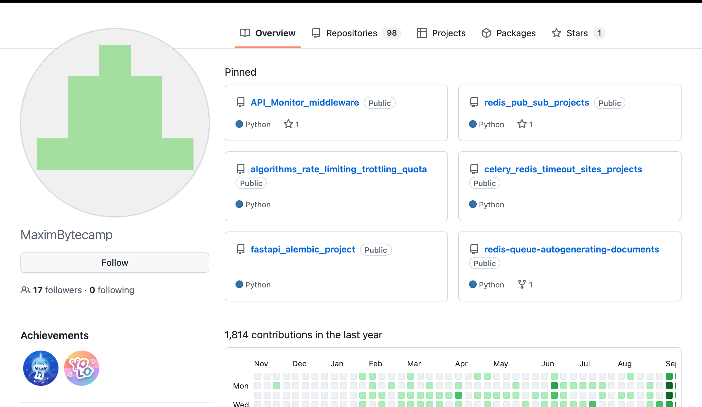
Посетитель видит логин и список репозиториев, но не понимает, чей это аккаунт. Имя и описание заполняют в настройках: Settings → раздел Public profile. Прямой адрес — github.com/settings/profile.
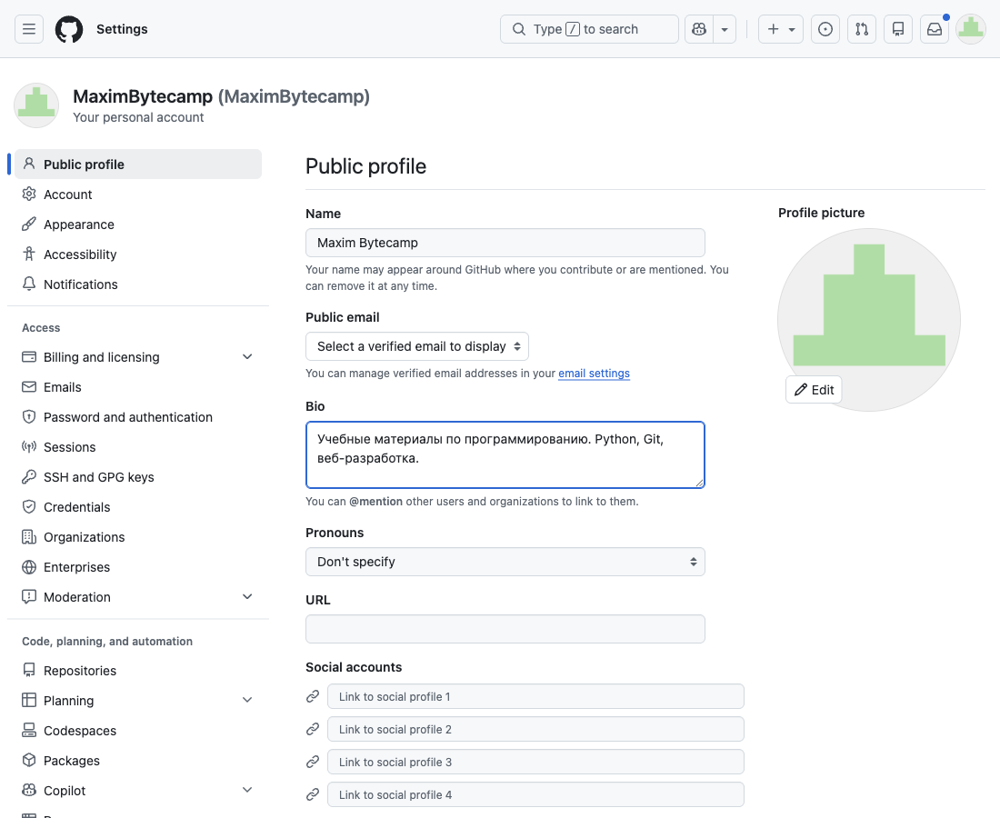
| Поле | Что писать | Пример |
|---|---|---|
| Name | имя и фамилию так, как они стоят в резюме | Иван Петров |
| Bio | одну-две строки: кто вы и чем занимаетесь | Студент колледжа, веб-разработка. Учебные проекты на HTML, CSS и Python. |
| URL | ссылку на свой сайт или резюме, если есть | https://ivan-petrov.github.io |
| Location | город | Москва |
| Profile picture | фотографию, по которой вас узнают; кнопка Edit на картинке справа | фото лица на светлом фоне |
Поле Public email оставьте с пунктом «не показывать», если в шаге 3 скрыли почту. Изменения сохраняет кнопка Update profile внизу страницы. После сохранения профиль выглядит так:
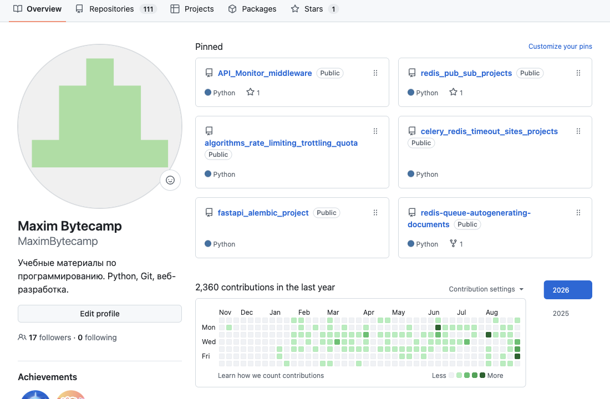
Под картинкой теперь стоит имя, под логином — описание. Посетитель понимает, чей это аккаунт и чем человек занимается, ещё до того, как откроет репозитории.
Что получилось.В профиле есть имя и описание. Для картинки в этом примере оставлен стандартный узор GitHub. Следующий шаг добавит на страницу профиля текст, который вы составите сами.
В главе 2.5 файл README.md описывал проект: GitHub показывает его под списком файлов репозитория. Тот же механизм работает для профиля. README профиля — файл README.md в особом репозитории, имя которого совпадает с логином. GitHub показывает этот файл вверху страницы профиля. Документация называет три условия: имя репозитория совпадает с логином, репозиторий публичный, файл README.md лежит в корне.
Слева — репозиторий, у которого владелец и имя одинаковые: MaximBytecamp/MaximBytecamp. Внутри — README.md. Пунктирная стрелка ведёт на страницу профиля справа: текст файла встаёт рядом с фотографией, выше закреплённых репозиториев. Если хотя бы одно из трёх условий нарушено, страница профиля остаётся прежней, а репозиторий выглядит как обычный.
Репозиторий создаётся на сайте: значок + в правом верхнем углу → New repository, или адрес github.com/new. В поле Repository name вписываем логин. GitHub сразу сообщает, что репозиторий особый:
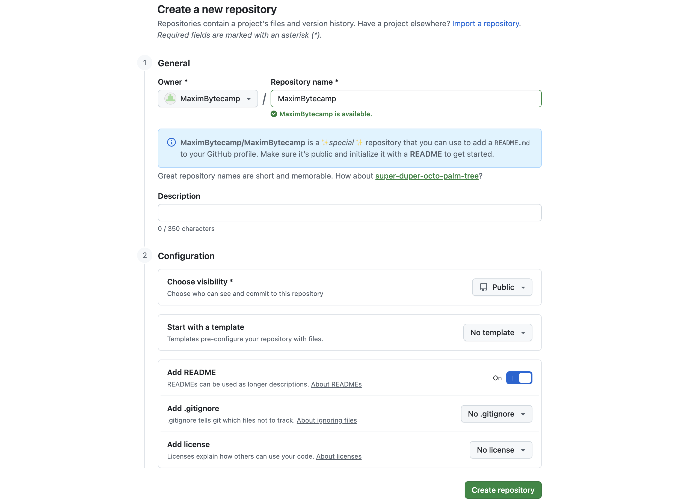
Видимость оставляем Public и отмечаем добавление файла README. Кнопка Create repository создаёт репозиторий с файлом README.md. Файл правится прямо на сайте: значок карандаша над текстом файла открывает редактор.
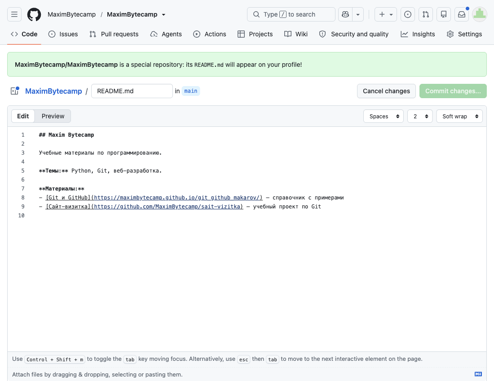
Текст README пишется в разметке Markdown из главы 2.5. Для студента достаточно трёх частей: кто вы, что умеете, где посмотреть работы.
## Иван Петров Студент колледжа, специальность «Информационные системы и программирование». **Умею:** HTML, CSS, Python, Git. **Проекты:** - [Сайт-визитка](https://github.com/ivan-petrov/sait-vizitka) — первый сайт с ветками и слияниями - [Кофейня](https://github.com/ivan-petrov/kofeynya) — домашние задания по Git
Правка в окне браузера сохраняется коммитом: кнопка Commit changes, сообщение и снова Commit changes. Это обычный коммит в ветку main репозитория профиля. Его подпись GitHub составляет сам, с основной почтой аккаунта или со служебным адресом, если почта скрыта. После коммита открываем профиль:
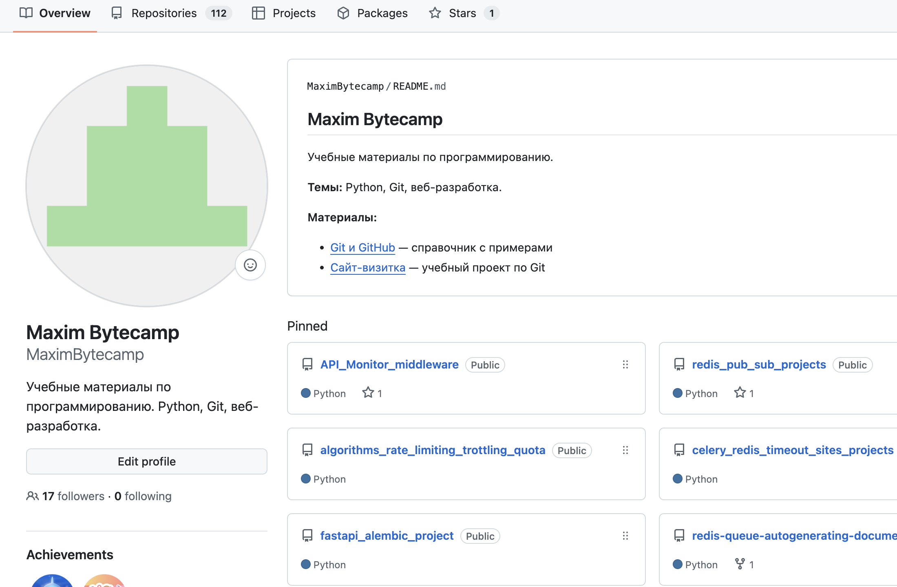
Текст README стоит вверху страницы. Ссылки в нём ведут к справочнику и репозиторию проекта: посетитель переходит к работам сразу с профиля.
Что получилось.У профиля есть имя, описание и README со ссылками на работы. Профиль готов для посетителей. Последняя часть главы — защита входа в аккаунт.
Банковская карта защищена дважды. Чтобы снять деньги в банкомате, нужна сама карта и ПИН-код. Украденный ПИН без карты бесполезен, найденная карта без ПИН-кода тоже. Защита держится на том, что вор редко получает обе вещи сразу.
Двухфакторная защита (two-factor authentication, 2FA) — вход, при котором кроме пароля нужен второй признак: код из приложения на телефоне, ключ безопасности или подтверждение на телефоне. Пароль — то, что вы знаете. Телефон — то, что у вас есть. Для входа нужны оба. В марте 2023 года GitHub начал поэтапно вводить обязательную двухфакторную защиту для участников, публикующих код. Если аккаунт включён в эту программу, GitHub показывает уведомление со сроком подключения.
Верхняя строка — вход владельца: пароль принят, код с телефона совпал, вход выполнен. Нижняя — вход человека, который узнал пароль. Первая проверка пройдена так же, как у владельца: пароль верный. На второй проверке ему нечего ввести, и вход останавливается. В показанном случае одного украденного пароля для входа недостаточно.
Перед шагом установите на телефон приложение-аутентификатор. GitHub называет такие приложения TOTP app. Подходят Google Authenticator, Microsoft Authenticator, Яндекс Ключ и другие, которые сканируют QR-код и выдают шестизначные коды. GitHub советует приложение как основной способ, а ключ доступа (passkey) или ключ безопасности — как запасной.
Защита включается в настройках: Settings → раздел Password and authentication → кнопка Enable two-factor authentication. Прямой адрес — github.com/settings/security.
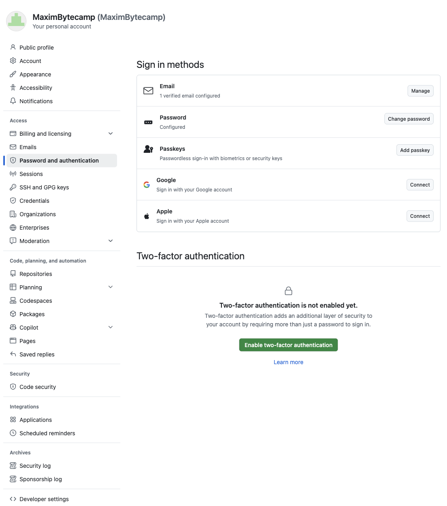
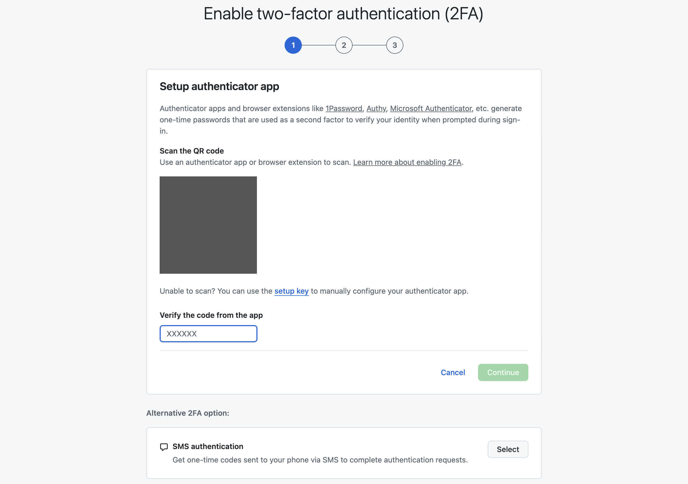
После завершения мастера вход на github.com с нового устройства после пароля запросит второй фактор. VS Code, в который вы вошли в главе 1.3, продолжает работать: он получил разрешение раньше и пароль заново не вводит.
Что получилось.Вход в аккаунт требует пароль и код из приложения. Приложение показывает новый код каждые 30 секунд, хотя телефон не связывается с GitHub. Остаётся понять, откуда телефон берёт тот же код, что и GitHub.
Двое договорились о секретном слове и сверили часы. Каждые полминуты оба берут слово и текущее время и считают по одной формуле короткое число. Если слово и часы одинаковые, числа совпадут, хотя эти двое ничего друг другу не передают. Посторонний без слова получить это число не может.
Приложение и GitHub работают так же. Общий ключ (secret) — строка, которую GitHub создаёт при включении защиты и передаёт в приложение через QR-код. После этого ключ лежит в двух местах: в приложении и на сервере GitHub. Одноразовый код по времени (time-based one-time password, TOTP) — шестизначное число из общего ключа и текущего времени. Каждая сторона вычисляет его сама по стандарту RFC 6238. Время делится на окна по 30 секунд, и в каждом окне получается своё число.
Левая и правая колонки устроены одинаково. Сверху — общий ключ, под ним — время и номер окна. Стрелка вниз — вычисление, его каждая сторона делает у себя. Внизу — результат: у обеих сторон 173616. Человек переносит число с телефона в форму входа, и GitHub сравнивает его со своим. Ключ при входе по сети не передаётся. Поэтому QR-код при включении защиты показывают один раз и никому не пересылают: кто сфотографирует QR-код, будет получать те же коды.
Вычисление занимает несколько строк на Python. Программа ниже считает код для ключа-примера JBSWY3DPEHPK3PXP в пять моментов времени 11 ноября 2025 года (UTC). Ключ взят для примера, ни к одному аккаунту он не относится.
import base64, hashlib, hmac, struct, time
def totp(secret_b32, t, digits=6, step=30):
key = base64.b32decode(secret_b32)
counter = int(t) // step # номер 30-секундного окна
mac = hmac.new(key, struct.pack(">Q", counter), hashlib.sha1).digest()
off = mac[-1] & 0x0F # где брать 4 байта
num = struct.unpack(">I", mac[off:off + 4])[0] & 0x7FFFFFFF
return counter, str(num % 10 ** digits).zfill(digits)
secret = "JBSWY3DPEHPK3PXP" # ключ из QR-кода (пример)
for t in [1762862400, 1762862415, 1762862429, 1762862430, 1762862461]:
counter, code = totp(secret, t)
print(time.strftime("%H:%M:%S", time.gmtime(t)), "окно", counter, "код", code)
| Строка | Что делает |
|---|---|
base64.b32decode(secret_b32) | переводит ключ из записи буквами и цифрами, как его показывает GitHub, в байты |
int(t) // step | номер окна: число секунд с 1 января 1970 года, делённое на 30 без остатка |
hmac.new(key, …, hashlib.sha1).digest() | подпись номера окна ключом: 20 байт, которые без ключа не получить |
off = mac[-1] & 0x0F | последние 4 бита подписи выбирают, с какого байта брать 4 байта |
struct.unpack(…) & 0x7FFFFFFF | 4 байта превращаются в целое число, старший бит сбрасывается |
num % 10 ** digits | последние 6 цифр числа — это и есть код; zfill дописывает нули слева |
Прогон на живых данных. Сначала проверка, что программа считает по стандарту. В RFC 6238 приведены контрольные значения для ключа 12345678901234567890 и кодов из восьми цифр. Программа выдала все три:
59 94287082 94287082 1111111109 07081804 07081804 2000000000 69279037 69279037
Теперь промежуточные значения для момента 12:00:00. Их печатает та же последовательность строк, дополненная выводом после каждой:
key b'Hello!\xde\xad\xbe\xef' 10 counter 58762080 mac ca294572752c6defb47c2291d9a4052dc966300f 20 last byte 0xf off 15 4 bytes 2dc96630 num 768173616 code 173616
| Строка программы | Что получилось на прогоне |
|---|---|
b32decode | 10 байт ключа |
t // 30 | окно 58762080 |
hmac … sha1 | 20 байт подписи, последний байт 0f |
mac[-1] & 0x0F | смещение 15: байты с 15-го по 18-й — 2dc96630 |
& 0x7FFFFFFF | число 768173616 |
% 10 ** 6 | последние шесть цифр — код 173616 |
Код 173616 — это последние шесть цифр числа 768173616. Дальше программа считает коды в пять моментов времени:
12:00:00 окно 58762080 код 173616 12:00:15 окно 58762080 код 173616 12:00:29 окно 58762080 код 173616 12:00:30 окно 58762081 код 733688 12:01:01 окно 58762082 код 586664
Три первых момента лежат в одном окне — и код один. В 12:00:30 начинается следующее окно, и код другой. Схема раскладывает те же пять моментов по шкале времени:
Цвет точки на шкале совпадает с цветом окна, в которое попал момент. Моменты 12:00:29 и 12:00:30 разделяет одна секунда, но они лежат в разных окнах, и коды у них разные. Отсюда два следствия для входа. Код, введённый на границе окон, может не пройти — тогда вводят следующий. Часы телефона должны идти точно: если они отстали на минуту, телефон считает код чужого окна. Поэтому в настройках телефона оставляют автоматическую установку времени.
Если телефон потерян, общий ключ пропал вместе с ним, и код для входа взять негде. На этот случай GitHub при включении защиты выдаёт коды восстановления (recovery codes) — набор одноразовых кодов. Каждый из них заменяет код из приложения один раз.
github-recovery-codes.txt.Документация GitHub предупреждает: если потерян и второй фактор, и коды восстановления, служба поддержки доступ к аккаунту не вернёт. Поэтому коды сохраняют сразу при включении защиты. Посмотреть коды заново и получить новый набор можно в разделе Password and authentication, пока вход в аккаунт есть.
Что получилось.Аккаунт защищён паролем и кодом из приложения, коды восстановления сохранены. Аккаунт готов к отправке коммитов.
| Что нужно | Где на GitHub | Адрес или команда |
|---|---|---|
| Регистрация | Sign up на главной | github.com/signup |
| Почты аккаунта, скрыть почту | Settings → Emails | github.com/settings/emails |
| Имя, описание, фотография | Settings → Public profile | github.com/settings/profile |
| README профиля | New repository с именем, равным логину | github.com/new |
| Двухфакторная защита, коды восстановления | Settings → Password and authentication | github.com/settings/security |
| Почта в Git | — | git config --global user.email |
| Почта автора коммита на GitHub | адрес коммита + .patch | строка From: |
7c91a90 отправлен с того же компьютера и тем же человеком, что и соседние, но с опечаткой в почте и остался без связи.user.name стоял логин GitHub.9a69f1f и 7c91a90 имя одинаковое, а связан только первый.anna-sidorova, anna_sidorova, anna-sidorova-?Только первый, если он свободен. Во втором подчёркивание, в третьем дефис в конце.
Добавить к адресу коммита .patch и прочитать строку From:. Почту из неё сравнить со списком в Settings → Emails. Если её там нет, коммит не связан с аккаунтом.
forma, а граф активности пустой. Почта верная. Почему?В граф засчитываются коммиты ветки по умолчанию. Коммиты ветки forma появятся в графе после её слияния в main.
Репозиторий называется так же, как логин; репозиторий публичный; файл README.md лежит в корне.
Код вычисляется из общего ключа и номера 30-секундного окна. У GitHub хранится тот же ключ, и время на сервере то же. Поэтому GitHub получает то же число.
В QR-коде лежит общий ключ. Кто его отсканирует, будет получать те же коды, что и ваш телефон. Вместе с паролем этого хватит для входа в аккаунт.
латиница, цифры, одиночные дефисы
github.com/логин
логин.github.io
Settings → Emails
Keep my email addresses private
git config --global user.email
почта в подписи = почта аккаунта
адрес коммита + .patch
почта связана
ветка по умолчанию
до суток на обновление
Settings → Public profile
репозиторий логин/логин
README.md в корне, Public
Settings → Password and authentication
QR-код в приложение
коды восстановления — Download
Термины главы, включая введённые раньше. У каждого — определение, пример и рисунок.
Учётная запись на GitHub: логин, пароль, почты, репозитории и настройки одного человека.
Примераккаунт MaximBytecamp с номером 245827976.
Гдеглавы 1.2, 4.1
Уникальное имя аккаунта латиницей. Входит в адрес профиля, репозиториев и сайта на Pages.
Примерgithub.com/MaximBytecamp/sait-vizitka.
Гдеглава 4.1, шаг 1
Публичная страница аккаунта по адресу github.com/логин: фото, имя, описание, README, репозитории, граф активности.
Примерgithub.com/MaximBytecamp.
Гдеглава 4.1, шаг 4
Файл README.md в публичном репозитории с именем, равным логину. GitHub показывает его вверху профиля.
Примеррепозиторий MaximBytecamp/MaximBytecamp.
Гдеглава 4.1, шаг 5; README проекта — глава 2.5
Имя и почта автора, которые Git записывает в каждый коммит из настроек. Меняются командой git config.
ПримерFrom: MaximBytecamp <bytecampmm@gmail.com> в ответе .patch.
Гдеглавы 1.3, 1.4, 4.1
Отметка GitHub, что коммит сделал владелец аккаунта. Ставится, если почта в подписи есть среди почт аккаунта.
Пример9a69f1f связан, 7c91a90 с почтой bytecampsm@… — нет.
Гдеглава 4.1, §4
Почта вида номер+логин@users.noreply.github.com. Письма на неё не доставляются, коммиты с ней связываются с аккаунтом.
Пример245827976+MaximBytecamp@users.noreply.github.com.
Гдеглавы 1.3, 4.1, шаг 3
Таблица дней за год на странице профиля. Коммит в ней считается, если почта связана с аккаунтом и коммит лежит в ветке по умолчанию.
Пример20 сентября коммит 7c91a90 в граф не попал, 21 сентября два коммита попали.
Гдеглава 4.1, §5
Ветка репозитория, которую GitHub показывает первой и чьи коммиты засчитывает в граф активности. В проектах курса — main.
Примеркоммит d1 в ветке dizayn попадёт в граф после слияния в main.
Гдеглавы 3.1, 4.1
Вход, при котором кроме пароля нужен второй признак — код из приложения, ключ безопасности или подтверждение на телефоне.
Примерпароль, затем код 173616 из приложения.
Гдеглава 4.1, шаг 6
Строка, которую GitHub создаёт при включении защиты и передаёт в приложение через QR-код. Хранится в приложении и на сервере.
ПримерJBSWY3DPEHPK3PXP — ключ-пример из прогона.
Гдеглава 4.1, §11
Шестизначное число из общего ключа и номера 30-секундного окна по стандарту RFC 6238. Каждая сторона вычисляет его сама.
Пример12:00:00–12:00:29 — 173616, с 12:00:30 — 733688.
Гдеглава 4.1, §11
Набор одноразовых кодов, каждый из которых один раз заменяет код из приложения. Нужны, если телефон потерян.
Примерфайл github-recovery-codes.txt, сохранённый кнопкой Download.
Гдеглава 4.1, шаг 7
Логин — уникальное имя аккаунта латиницей с одиночными дефисами. Он входит в адрес профиля, репозиториев и сайта на Pages, поэтому выбирается из имени и фамилии. GitHub связывает коммит с аккаунтом по почте в подписи, имя не сравнивается. Коммит с почтой, которой нет в аккаунте, остаётся без аватара и не попадает в граф активности, как 7c91a90 с опечаткой в почте. В граф засчитываются коммиты ветки по умолчанию со связанной почтой. Почту Git сверяют со страницей Settings → Emails. Чтобы почта не была видна в коммитах, её скрывают и используют служебный адрес noreply. Профиль заполняют в Settings → Public profile, а текст на странице профиля задаёт README в публичном репозитории с именем, равным логину. Двухфакторная защита требует при входе код из приложения. Приложение и GitHub вычисляют этот код сами из общего ключа и номера 30-секундного окна. Коды восстановления сохраняют сразу при включении защиты: без них потерянный телефон означает потерянный аккаунт.
curl и gh получены 11.11.2026; кадры настроек, README и графа активности обновлены 18.11.2026 на аккаунте MaximBytecamp и репозитории git_github_makarov..patch, условия засчитывания в граф — документация GitHub, «Why are my contributions not showing up on my profile?».